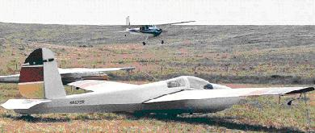

Dad is gone. In a hospital bed due to a touch of pneumonia, one of the tests revealed what proved to be an inoperable aneurysm. While the doctors considered options and Dad, as always, teased and joked with the nurses, it burst, and that was it.
I was eight when Mom announced, "I'd like to learn to fly gliders." Our friend Bob Nye (some of you know him by his glider's call sign UU "Double Ugly") had invited us to visit where he towed, out at Perris Valley Airport way east (well ... at the time!) of Los Angeles. Mom got a glider ride that day and liked what she saw, of course. And she did learn to fly gliders, soloed in a 2-22 and got to fly the 1-19 too. From then on during our tenure in California, a weekend flight out to the glider port was a common event for our family. Dad got his glider rating, too, and the several rides I received from him in the 2-22 and in some of Tehachapi's and El Mirage's 2-32s convinced me I wanted to be a glider pilot when I grew up, just like my Mom and Dad.
I still have the pictures Dad took of my solo in the 2-33 at Warrenton a few years later for my 14th birthday. He was proud of me that day, and that felt real good. I think he was glad more recently as well, when I acquired a half-share of a 1-26.
Dad started flying in 1951, when he found a 50 hp Aeronca Chief that needed some work. He got it flying and learned to fly in it at the old El Monte airport that's still there to this day. He says the engine quit a couple times before he even got his license, so he had some glider training real early. Lots more fields around Los Angeles to land in then - you just had to dodge the cows. My parents flew all the way across the country once, and back, in their Ercoupe. Later they had a Tri Pacer and then a 300 Jacobs Cessna 195, and finally settled on the Cessna 180 I today have the privilege of flying.
Dad worked at JPL for 10 years - basically all through the '50s. Leafing through all these old pictures the other day at Mom's, all these memories of course flooded in. Then I found one photo of Dad with a team of real happy looking guys. (Dad is third from the left.)
"Oh yeah," Mom said. "This is the team he saved." I looked up quizzically. Well, as she relates the story, Dad, newly minted Caltech graduate and aeronautical engineer, took a team to White Sands for a series of solid fuel propellant missile tests some time in '52. The Army ordered up one test in particular that looked awfully dangerous to him. Questioning it did him no good, the test was vital. Refusing it wasn't going to work, they just were going to give the test to another team. Honestly ... they would kill themselves. So Dad accepted the test card.
Dad had his team rig pumps in the block house in case the test went awry. The block house would probably survive the explosion, but the resulting gasses would contain enough poison to kill them all. They sealed the room as best they could, then pumped up the pressure in the block house and conducted the test. It was a spectacularly impressive failure. After about 30 seconds the range officer called down to the block house. "You guys alright?" "Yeah, Densmore had us overpressure the facility so we're ok. Don't come down here for a few minutes until the outside air clears." The range officer considered that for a moment and then said, "Well, you let us know if you're gonna do that again, we can sell tickets to that."
Dad spent whole his life in the aerospace industry, and every time we ever sat down together he had another great aviation, soaring or aerospace story. I loved them all. Many of them involved his years in the FAA, working to develop an environmental noise program that would work for everyone, meeting the needs of environmental groups and Congress without stifling or crippling the general aviation world he so dearly loved. A few involved his years of service in our Navy. Of course, there were always wonderful flying stories, and late in life he owned a small trawler on the Chesapeake; that generated lots of stories too. As he got older, I started to hear some of the stories more than once, but that was definitely okay by me, I never tired of them.
In all my 50 years though, I had never heard that story from Dad. Maybe that one was just too close. I'll never know. Five years ago, at age 75 and with a disqualifying medical condition, he handed me the keys to his 180. "Son, don't be sad that I have to stop flying. I had the privilege of flying for 50 years. Life has been very good to me." So I'm going to go on flying as long as I can do so safely, taking advantage of the legacy and freedom he and countless other souls have brought to our nation. And I will remember always the man who taught me to love flying, to serve well, and to live life to the fullest.
|  |